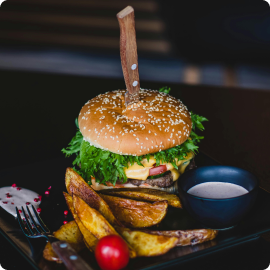

Lamb Tzatziki Burgers
LambIngredients
- Bulgur Wheat (25g)
- Lamb Mince (500g)
- Cumin (1 tsp)
- Coriander (1 tsp)
- Paprika (1 tsp)
- Garlic (1 clove finely chopped)
- Olive Oil (For frying)
- Bun (4)
- Cucumber (Grated)
- Greek Yogurt (200g)
- Mint (2 tbs)
Instructions
- Tip the bulghar into a pan, cover with water and boil for 10 mins.
- Drain really well in a sieve, pressing out any excess water.
- To make the tzatziki, squeeze and discard the juice from the cucumber, then mix into the yogurt with the chopped mint and a little salt.
- Work the bulghar into the lamb with the spices, garlic (if using) and seasoning, then shape into 4 burgers.
- Brush with a little oil and fry or barbecue for about 5 mins each side until cooked all the way through.
- Serve in the buns (toasted if you like) with the tzatziki, tomatoes, onion and a few mint leaves.